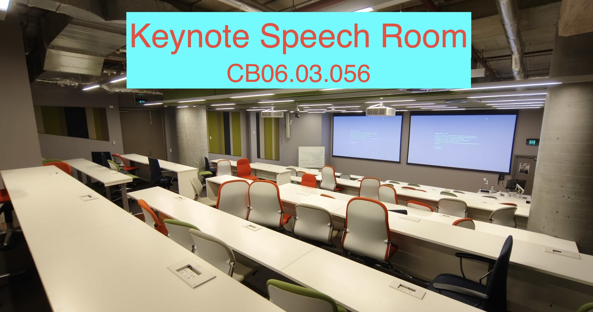
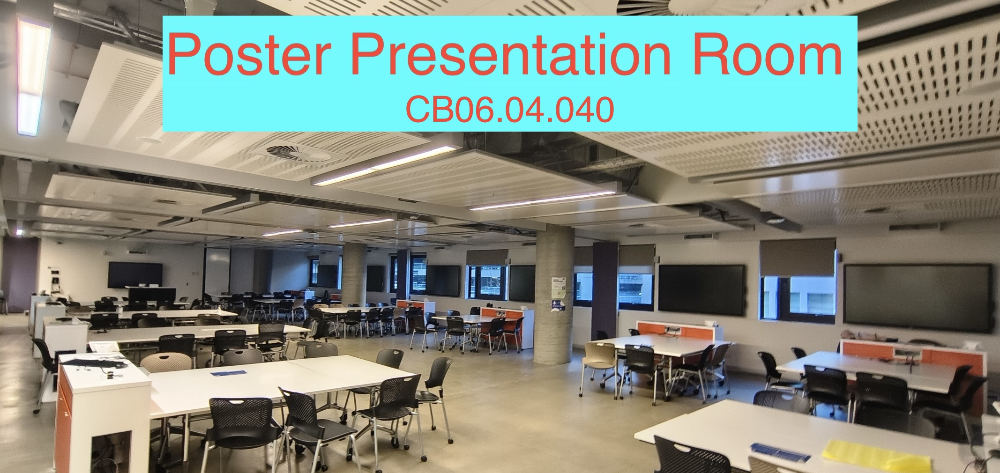
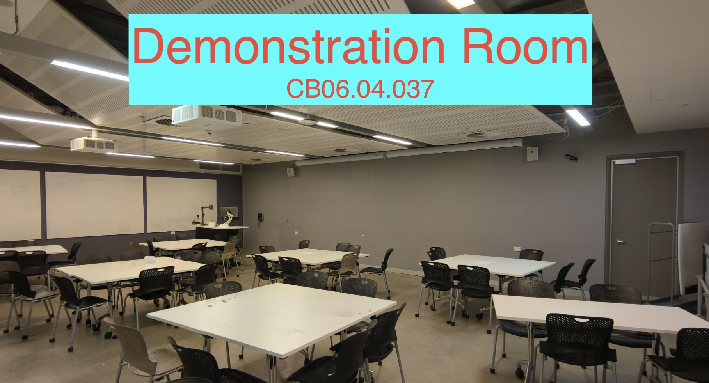
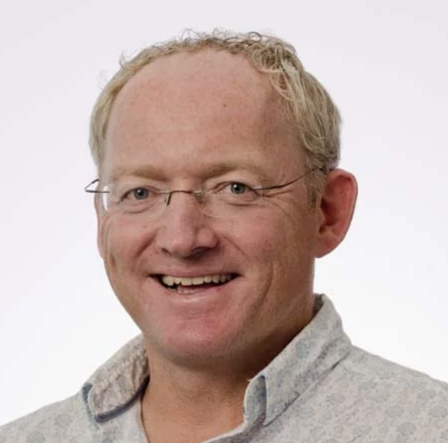
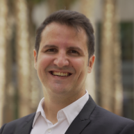
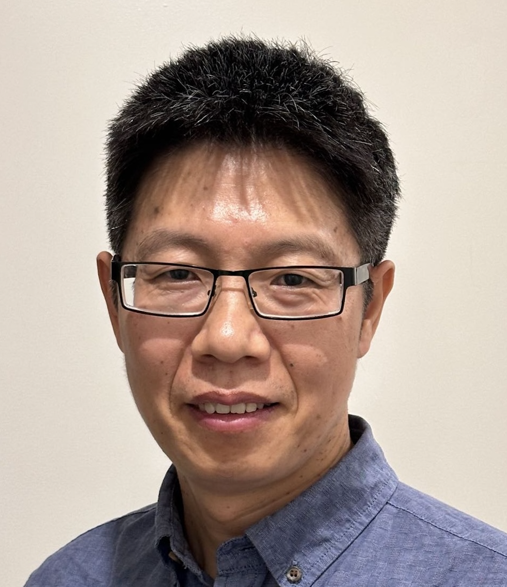

Sydney AI Meetup
Sydney AI Meetup — Symposium 2024
24 November 2024
University of Technology Sydney
University of Technology Sydney
Sydney AI Meetup is an organization that brings together HDR students, researchers, academic staff, and industry professionals in the AI community across greater Sydney, extending to Australia and international AI communities.
Through monthly seminars and recurring symposia, we create a platform for substantive, tech-oriented discussion, new partnerships, and opportunities for joint research and industry internships — driving innovation and knowledge exchange in AI.
Join the LinkedIn Community →


| 8:00-8:45 | Registration | |
| Location for Talks: CB06.03.056 | TBD | |
| 8:45-9:00 | Opening Remark | TBD |
| 9:00-9:45 | The Shortest History of AI Since Alan Turing first posed the question, ‘Can machines think?’, artificial intelligence has evolved from a speculative idea to a transformative force. I trace this evolution, from Ada Lovelace's visionary work to defeating chess and Go world champions and the emergence of ChatGPT. I argue that many ‘overnight’ successes were decades in the making and come back to six key ideas. Finally, I speculate what is next. A related book will be published April 2025 by Black Inc. Link |
Prof. Toby Walsh, UNSW |
| 9:45-10:30 | AUC Maximisation in Machine Learning Stochastic optimisation algorithms, such as stochastic gradient descent (SGD), update models sequentially with low per-iteration costs, making them well-suited for analysing large streaming datasets. However, most studies focus on classification accuracy, overlooking the critical goal of maximizing the Area Under the ROC Curve (AUC) in imbalanced classification and bipartite ranking. In this talk, I will present our recent work on developing novel SGD-type algorithms for AUC maximisation, examining computational and statistical trade-offs that reveal lower bounds for optimisation error. Additionally, we introduce efficient stochastic primal-dual optimisation algorithms for AUC maximisation, designed to handle streaming data and sparse, high-dimensional settings. This work arises from innovative synergies between machine learning and optimisation. |
Prof. Yiming Ying, USyd |
| 10:30-11:00 | Tea Break (Overlap with Poster and Demonstration Session below) | |
| Location for Poster: CB06.04.040 | ||
| 10:30-11:30 | Poster Session A 01. Saurav Jha (UNSW), CLAP4CLIP: Continual Learning with Probabilistic Finetuning for Vision-Language Models, NeurIPS 2024 02. Dingbang Liu (UoW), Integrating Suboptimal Human Knowledge with Hierarchical Reinforcement Learning for Large-Scale Multiagent Systems, NeurIPS 2024 03. Yanxi Li (USyd), Harnessing Edge Information for Improved Robustness in Vision Transformers, AAAI 2024 04. Yanjun Zhang (UTS), Privacy-Preserving and Fairness-Aware Federated Learning for Critical Infrastructure Protection and Resilience, WWW 2024 05. Zhiyu Zhu (UTS), AttEXplore: Attribution for Explanation with model parameters eXploration, ICLR 2024 06. Xiaocong Chen (CSIRO), Maximum-Entropy Regularized Decision Transformer with Reward Relabelling for Dynamic Recommendation, KDD 2024 07. Xiao Chen (UoN), Asynchronous Joint-Based Temporal Pooling for Skeleton-Based Action Recognition, ASE 2024 08. Zhongyan Zhang (UoW), Learning Spatial-context-aware Global Visual Feature Representation for Instance Image Retrieval, ICCV 2023 09. Iman Rahimi (UTS), A Review on COVID-19 Forecasting Models, NCA 2023 10. Xiyu Wang (USyd), Bridging Data Gaps in Diffusion Models with Adversarial Noise-Based Transfer Learning, ICML 2024 11. Yuankai Qi (MQ), Weakly Supervised Video Individual Counting, CVPR 2024 12. Yun Li (CSIRO), Context-based and Diversity-driven Specificity in Compositional Zero-Shot Learning, CVPR 2024 |
|
| 11:30-12:30 | Poster Session B 01. Yunke Wang (USyd), Imitation Learning from Purified Demonstrations, ICML 2024 02. Shanaka Gunasekara (UoW), Asynchronous Joint-Based Temporal Pooling for Skeleton-Based Action Recognition, IEEE TCSVT 2024 03. Hu Zhang (CSIRO), OpenSight: A Simple Open-vocabulary Framework for Lidar-based Object Detection, ECCV 2024 04. Haodong Lu (UNSW), Learning with Mixture of Prototypes for Out-of-Distribution Detection, ICLR 2024 05. Zhaoxi Zhang (UTS), Stealing Watermarks of Large Language Models via Mixed Integer Programming, ACSAC 2024 06. Fariba Lotfi (MQ), Knowledge Graph Construction in Hyperbolic Space for Automatic Image Annotation, IVCJ 2024 07. Chen Chen (USyd), Towards Memorization-Free Diffusion Models, CVPR 2024 08. Susan Zhang (UoW), Novel E-Learning Experience and Perceptions with Impacts from Educational Influencers, IEEE FIE 2023 09. Yanjun Zhang (UTS), Bounded and Unbiased Composite Differential Privacy, IEEE S&P 2024 10. Hongyan Xu (CSIRO), Detection of Basal Cell Carcinoma in Whole Slide Images, MICCAI 2023 11. Qiongkai Xu (MQ), Data reconstruction attack on LLM, EMNLP 2024 12. Hongtao Huang (UNSW), MatchNAS: Optimizing Edge AI in Sparse-Label Data Contexts via Automating Deep Neural Network Porting for Mobile Deployment, WWW 2024 |
|
| 12:30-14:00 | Lunch Break | |
| Location for Talks: CB06.03.056 | TBD | |
| 14:00-14:45 | Mind the Gap: 3 Ways to Connect Ethical AI Frameworks with Real-World Practice The route toward ethical AI is one we must all walk together. When I began my career in data science, ethical considerations were rarely part of the conversation. Over time, I saw how the drive for rapid growth overshadowed the need to develop AI responsibly. Today, ethical AI is a hot topic, yet we still struggle to turn these conversations into meaningful action. In this talk, I will share my experiences, from data science in the insurance sector to launching AI ventures and academic research, witnessing firsthand what tech companies prioritise and the problem of misaligned incentives. I will discuss why ethics is widely talked about but seldom acted upon, and how we can change that. By focusing on education, building strong communities, and encouraging effective policy, we can bridge the gap and make ethics a practical part of AI development. Together, we can create AI that not only innovates but also serves society with integrity. |
Dr. Alberto Chierici |
| 14:45-15:30 | Driving Innovation with AI: Transforming Industries and Creating Societal Impact In this keynote, I will explore how AI is revolutionizing multiple sectors, including water, transport, agriculture, and healthcare, by driving innovation and delivering tangible business and societal outcomes. From enhancing operational efficiency to optimizing decision-making, AI is proving to be a powerful tool for solving complex challenges across industries. I will share real-world examples of how AI is not only improving productivity but also creating new opportunities for growth, sustainability, and societal benefit. By focusing on practical, data-driven solutions, we can unlock the full potential of AI to transform industries and make a meaningful impact on the world around us. Let’s explore how AI is shaping the future of business and society. |
Prof. Fang Chen |
| 15:30-16:00 | Tea Break (Overlap with Poster and Demonstration Session below) | |
| Location for Poster: CB06.04.040 | ||
| 15:30-16:30 | Poster Session C 01. Zhe Huang (UoW), Robust Collaborative Perception By Iterative Object Matching and Pose Adjustment, ACM MM 2024 02. Fariba Lotfi (MQ), The Open Story Model (OSM): Transforming Big Data into Interactive Narratives, ICWS 2024 03. Roger Zheng (CSIRO), Enhancing Contrastive Learning for Ordinal Regression via Ordinal Content Preserved Data Augmentation, ICLR 2024 04. Haimin Zhang (UTS), Improving the Generalization of GNNs for Critical Non-Euclidean Tasks, 05. Tao Huang (USyd), Active Generation for Image Classification, ECCV 2024 06. Jiamin Chang (UNSW), DNN-GP: Diagnosing and Mitigating Model's Faults Using Latent Concepts, USENIX 2024 07. Salma Khan (MQ), Five Ethical Principles Data Science Students Need to Consider When Creating Infographics, ACIS 2024 08. Katia Bourahmoune (UTS), Fitness Activity Recognition Using a Novel Pressure Sensing Mat and Machine Learning for the Future of Accessible Training, IJCAI 2024 09. Cong Cong (UNSW), Decoupled optimisation for long-tailed visual recognition, AAAI 2024 10. Jianyuan Guo (USyd), Data-efficient Large Vision Models through Sequential Autoregression, ICML 2024 11. Chengkai Huang (UNSW), Dual Contrastive Transformer for Hierarchical Preference Modeling in Sequential Recommendation, SIGIR 2023 12. Haimei Zhao (USyd), UniMix: Towards Domain Adaptive and Generalizable LiDAR Semantic Segmentation in Adverse Weather, CVPR 2024 |
|
| 16:30-17:30 | Poster Session D 01. Rongcheng Wu (UTS), Few-Shot Stereo Matching with High Domain Adaptability Based on Adaptive Recursive Network, IJCV 2024 02. Akbar Telikani (UoW), Machine Learning for UAV-Aided ITS: A Review With Comparative Study, IEEE TITS 2024 03. Wenbin Wang (UNSW), A High-quality English Corpus with Global Accents for Zero-shot Speaker Adaptive Text-to-Speech, InterSpeech 2024 04. Bahram Mohammadi (MQ), Augmented Commonsense Knowledge for Remote Object Grounding, AAAI 2024 05. Paul Hurley (WSU), Layer-wise Sine Activation Functions 06. Tong Chen (USyd), LighTDiff: Surgical Endoscopic Image Low-Light Enhancement with T-Diffusion, MICCAI 2024 07. Yunyi Liu (USyd), MRScore: Evaluating Radiology Report Generation with LLM-based Reward System, MICCAI 2024 08. Huiyi Wang (UNSW), Self-Expansion of Pre-trained Models with Mixture of Adapters for Continual Learning, NeurIPS 2024 09. Qiping Yang (USyd), Entropy testing and its application to testing Bayesian networks, NeurIPS 2024 10. Zhenghao Chen (UoN), Group-aware Parameter-efficient Updating for Content-Adaptive Neural Video Compression, ACM MM 2024 11. Zhongzheng Lai (UTS), DEMO: Real-Time Simulation of Wireless Signal Propagation for Dynamic Environment Through GPU-Based Ray Tracing, ACM SigCOMM 2024 12. Yue Tan (UNSW), ViLCo-Bench: VIdeo Language COntinual learning Benchmark, NeurIPS 2024 |
|
| 17:30-19:30 | Industry-Academia Networking Event 1. Accelerating Science with NVIDIA NVIDIA's advanced GPU technologies and AI platforms are revolutionizing scientific computing across multiple domains. This talk will explore how NVIDIA's solutions are enabling unprecedented acceleration of research and discovery in fields like generative AI, digital twins, data science, climate modelling, robotics and drug discovery. We will introduce the latest AI-powered tools for data analytics and simulation, such as RAPIDS, Modulus, (Bio)NeMo, Omniverse and CLARA, pushing the boundaries of what's possible. Real-world examples will demonstrate how researchers are leveraging those technologies to tackle complex problems orders of magnitude faster and more efficiently than traditional methods. 2. How to build an AI startup in Sydney Chuhao Liu, the co-founder of Sunflower AI, will provide insight into his journey of building an AI startup from scratch. From securing the first paying customer at CSIRO to delivering services for SXSW Sydney—one of the largest conferences —all within just 10 months, Chuhao will share the key milestones and lessons he learned. Additionally, he will discuss the experience of receiving the first-ever investment from angel investors. The presentation will also explore strategies for startups to find their unique value in the era of ChatGPT and OpenAI. 3. Multimodal Dense Retrieval in Production Deploying search solutions into production is inherently challenging, with relevance and scalability often being the most difficult aspects to reconcile. Relevance is typically subjective to end users (to varying extents), as such search systems must be tailored to their specific applications to be truly effective. Recent advances in dense embeddings have made it possible to perform high quality retrieval over multimodal data - including images, audio, video, and text; this technology has been a huge unlock for discoverability over unstructured data that was previously difficult to search. In this talk, we will explore use cases for multimodal vector search and how these systems can be implemented to deliver the most value to organisations and end users alike. We will discuss how we fine-tune embedding models and customise search functionalities to build effective and successful information retrieval systems at scale for a variety of domains and use cases. 4. Life and opportunities at TikTok | Dr Johan Barthelemy NVIDIA CEO Chuhao Liu Sunflower AI Owen Elliott Marqo Delegates from TikTok |

Toby Walsh is Laureate Fellow and Scientia Professor of Artificial Intelligence at the Department of Computer Science and Engineering at the University of New South Wales, research group leader at Data61, adjunct professor at QUT, external Professor of the Department of Information Science at Uppsala University, an honorary fellow of the School of Informatics at Edinburgh University and an Associate Member of the Australian Human Rights Institute at UNSW. He was Editor-in-Chief of the Journal of Artificial Intelligence Research, and of AI Communications. He is on the editorial board of the Journal of the ACM, Journal of Automated Reasoning and the Constraints journal. He has been elected a fellow of the Australian Academy of Science, the Association of Computing Machinery (ACM), the American Association for the Advancement of Science, the Association for the Advancement of Artificial Intelligence, and the European Coordinating Committee for AI in recognition of his research in artificial intelligence and service to the community.
Distinguished Professor Fang Chen is a globally recognized, award-winning leader in AI and data science. Currently, she serves as the Executive Director of the Data Science Institute at the University of Technology Sydney. Her career spans prominent roles, including Dean of the Faculty at Beijing Jiaotong University and senior leadership positions at Intel, Motorola, and the Commonwealth Scientific and Industrial Research Organisation (CSIRO). Fang's expertise lies in developing innovative, data-driven solutions to complex challenges across large-scale networks in various sectors, including transportation, water, energy, agriculture, telecommunications, education, health, financial services, real estate, and retail. Her extensive experience in industry, government, and academia has made her a driving force in shaping digital transformation initiatives and creating world-class R&D strategies. She is also a staunch advocate for ethical and human-centred AI practices.

Dr. Alberto Chierici is an accomplished entrepreneur, scientist, and investor with over a decade of expertise in data science, natural language processing, conversational AI, and product management. Holding a Ph.D. in Computer Science from NYU, his research focused on dialogue systems and human-computer interaction. As a seasoned professional, he supports and empowers founders, helping to shape the vision and trajectory of tech-driven products. Alberto is the author of The Ethics of AI: Facts, Fictions, and Forecasts, a thought-provoking exploration of the ethical implications of artificial intelligence. His career includes founding and co-founding companies in the InsurTech and AI sectors, earning multiple industry accolades for delivering innovative customer experiences. Passionate about mentoring, advising, and consulting, Alberto is an advocate for ethical AI and strives to advance the field with integrity and insight.

Dr. Ying is a professor in the School of Mathematics and Statistics at the University of Sydney. Previously, he was a tenured professor in the Department of Mathematics and Statistics at SUNY Albany (USA), where he was also affiliated with Computer Science and founded the UAlbany Machine Learning Group. Dr. Ying received the University at Albany’s Presidential Award for Excellence in Research and Creative Activities (2022) and the SUNY Chancellor’s Award for Excellence in Scholarship and Creative Activities (2023). He regularly serves as an (Senior) Area Chair for major machine learning conferences such as NeurIPS, ICML, AAAI, and AISTATS. His research focuses on the theory and algorithms of machine learning and deep learning, with active collaboration with IBM on trustworthy AI.
Developer Relations Manager - Strategic Researcher Engagement, Asia Pacific South, NVIDIA. After his PhD in Applied Mathematics at the University of Namur (Belgium), Dr. Johan Barthélemy joined the SMART Infrastructure Facility of the University of Wollongong (Australia) where he was a Lecturer and the head of the Digital Living Lab researching and developing AI and AIoT solutions for smart cities and environmental monitoring. Being passionate about applied AI and how to accelerate it with GPUs, he is now a Developer Relations Manager at NVIDIA, helping developers and scientists in their journey to build the next generation of AI-based solutions.
Chuhao Liu is the co-founder and CEO of Sunflower AI, a Sydney-based startup transforming live events with real-time captioning and translation powered by AI. Sunflower AI has worked with clients including SXSW Sydney, CSIRO and NSW Government to make events more inclusive for diverse audiences. Chuhao received Global Talent Visa in 2021 and Sunflower AI was recognised as Best New Idea from Startup Daily in 2024.
Owen Elliott is a Solutions Architect at Marqo, specialising in AI-powered multimodal vector search solutions. He works with companies to improve search relevance for large scale systems which serve results to millions of users. With expertise in systems architecture, simulation, and AI, he focuses on feasible solutions to real-world business problems, drawing on experience across industries including agriculture, banking, mining, defence, and eCommerce. At Marqo, Owen works with a team developing next-generation information retrieval technology for search and recommendation systems, leveraging multimodal models for dense and hybrid retrieval across text, images, audio, and video. He also collaborates with Marqo's applied sciences team on research, contributing to leading information retrieval conferences. His research centres on dense retrieval algorithms and the expressive capabilities of multimodal embeddings.


In alphabetical order
For enquiries about the symposium or future events, reach out to one of the organizing committee.